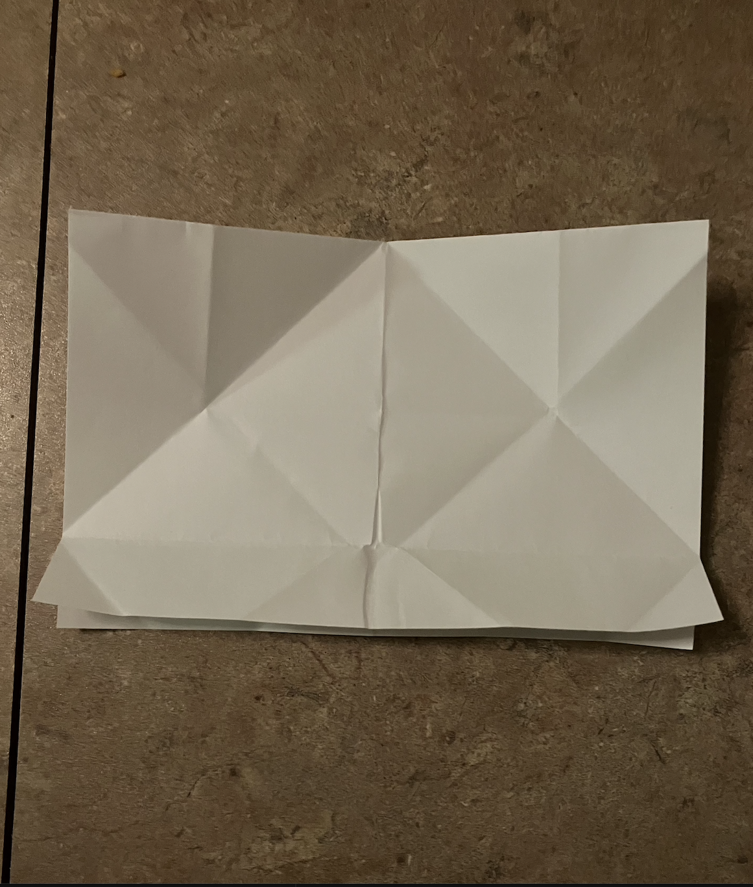

Start with the paper having the short end on top and the long end on the sides. Then fold the paper from top to bottom perfectly in half.
Next, fold both of the top corners from the side that was folded into the center.
You can fold the paper in half from left to right to make a crease and then unfold to have a more exact fold.
Fold the bottom flaps over the bottom of the triangle shape. Next tuck in the corners of the flap in the front (the side with the fold visable).
Squeeze both ends together to fold the paper into a diamond shape. Then flip it onto its side so that the flat part is visable.
Fold the bottoms of the diamond into the center to make a shape similar to a triangle.
Next, squeeze the sides together again to fold the paper into a diamond shape similar to the last one but smaller.
Then flip it onto its side so the flat side is visible.
Pull the sides out to unfold the boat and see your finished product.